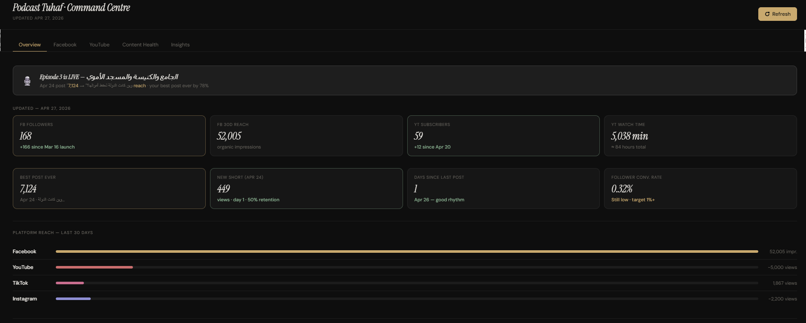
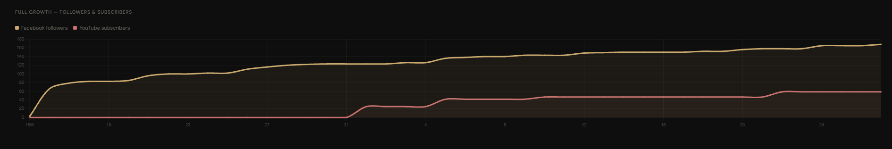
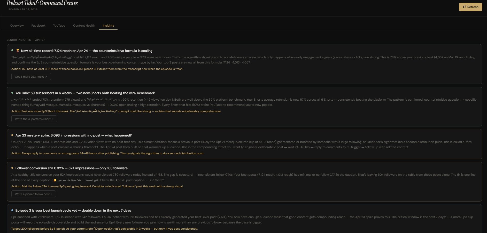

Built a social media performance dashboard for Podcast Tuhaf, paired with an AI strategist that reads timing, reach, and episode content to tell us exactly which clips to publish — helping a niche architecture podcast reach 50,000+ viewers on Facebook Shorts and Reels.
As one of my side projects, Podcast Tuhaf needed visibility into how our posts were performing across platforms — that part any dashboard can do. What we actually needed was something that understood who we were trying to reach, and could help us grow our audience for YouTube videos, Shorts, and Reels across different platforms, not just report on them.
I built a social media dashboard connected to every platform we post on, paired with an AI strategist layered on top. The AI analyzed posting timing and reach across our content, and also read the substance of each episode — surfacing which clips had strong enough hooks to pull new listeners in, so we knew exactly what to cut for social before we published.



The results exceeded expectations. Podcast Tuhaf covers architecture — a genuinely small niche — and we still reached 50,000+ viewers on Facebook Shorts and Reels, a scale that wouldn't have been realistic without a dedicated social media strategist. The lesson: knowing precisely what to build and narrowing the right questions down got better results than a generic tool ever could. Need something similar for your own project? Let's talk.